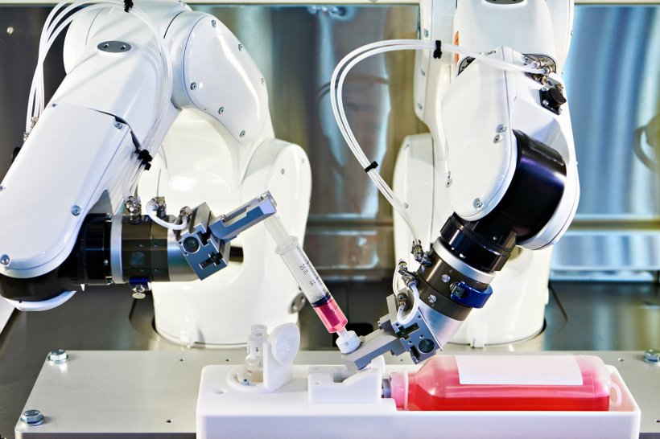

Projects
Medical Research Project
One of the developments I worked on is providing automations for shampoo chemicals so that they can be tested for fluidity and textural properties using various testing machines. It's important that the machines are able to source from a collection of vials stored in an incubator and are appropriately scheduled with handover between device positions using a robot.
Device Update Project
This has been an exciting project where it's crucial all devices evolve in a way that is symbiotic with one another by exchanging their data in standard data formations. The project involved each device having an interface that allowed it to act as a node in a network and provided tranformation of it's raw relative data to a universal data format and context that could be used to analyse and compare it's own throughput agaianst other devices in it's local and wider networks and from that understand it's relative performance.